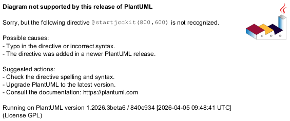

@startjcckit(800,600)
data/common/x = 1995 1996 1997 1998 1999 2000 2001 2002
data/curves = kosovo putin
data/kosovo/ = data/common/
data/kosovo/title = Kosovo
data/kosovo/y = 15 15 17 89 479 167 156 105
data/putin/title = Putin
data/putin/ = data/common/
data/putin/y = 0 0 0 0 21 91 77 65
background = 0xffffff
plot/initialHintForNextCurve/className = jcckit.plot.PositionHint
plot/initialHintForNextCurve/position = -0.01 0.1
defaultAxisParameters/ticLabelFormat = %d
defaultAxisParameters/ticLabelAttributes/fontSize = 0.03
defaultAxisParameters/axisLabelAttributes/fontSize = 0.04
defaultAxisParameters/axisLabelAttributes/fontStyle = bold
plot/coordinateSystem/xAxis/ = defaultAxisParameters/
plot/coordinateSystem/xAxis/axisLabel = year
plot/coordinateSystem/xAxis/minimum = 1994.5
plot/coordinateSystem/xAxis/maximum = 2002.5
plot/coordinateSystem/xAxis/minimumTic = 1995
plot/coordinateSystem/xAxis/maximumTic = 2002
plot/coordinateSystem/yAxis/ = defaultAxisParameters/
plot/coordinateSystem/yAxis/axisLabel = number of articles
plot/coordinateSystem/yAxis/maximum = 500
plot/coordinateSystem/yAxis/grid = true
defaultCurveDefinition/symbolFactory/className = jcckit.plot.BarFactory
defaultCurveDefinition/symbolFactory/size = 0.02
defaultCurveDefinition/symbolFactory/attributes/className = jcckit.graphic.BasicGraphicAttributes
defaultCurveDefinition/symbolFactory/attributes/lineColor = 0
defaultCurveDefinition/withLine = false
plot/curveFactory/definitions = 1 2
plot/curveFactory/1/ = defaultCurveDefinition/
plot/curveFactory/1/symbolFactory/attributes/fillColor = Chocolate
plot/curveFactory/2/ = defaultCurveDefinition/
plot/curveFactory/2/symbolFactory/attributes/fillColor = 0xffca00
@endjcckit